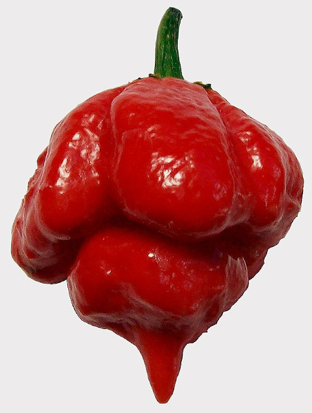

Comme je vous en raconte tellement et que les paroles s'envolent....
Alors je vais essayer de vous laisser quelques recommandations pour combler certaines lacunes.
Si, si, il faut combler. Parceque le chewing gum des yeux (tous les écrans) ne suffit pas à élargir votre empan de connaissances.
Mes recommandations seront d'ordre littéraire, musicale, cinématographique, artistique, culinaire et au grés de nos conversations.
Pentarun in A minor
Mes toi çà dans les doigts, très lentement, en aller retour (au médiator), régulièrement tous les jours. Je précise que je parle de guitare.
Chicken in The Corn (Brushy One String)
Donc comme lui tu vas commencer avec une corde. Après je présenterais Morphine, un sax et une basse avec avec DEUX cordes.
Piment Scorpion Butch T
Quand on te dit que "c'était" le piment le plus fort au monde, t'es sûr que tu veux voir le plus fort ?

Vitamin C (Can)
De la vitamine de Krautrock vous m'en direz des nouvelles.
Les chroniques martiennes (Ray Bradbury)
Un recueil de nouvelles (existe en français) accessibles à tout le monde et ô combien touchant. Resteras tu insensible au destin des colons et des habitants de Mars ? Ne pas oublier que cela a été écrit en 1950.